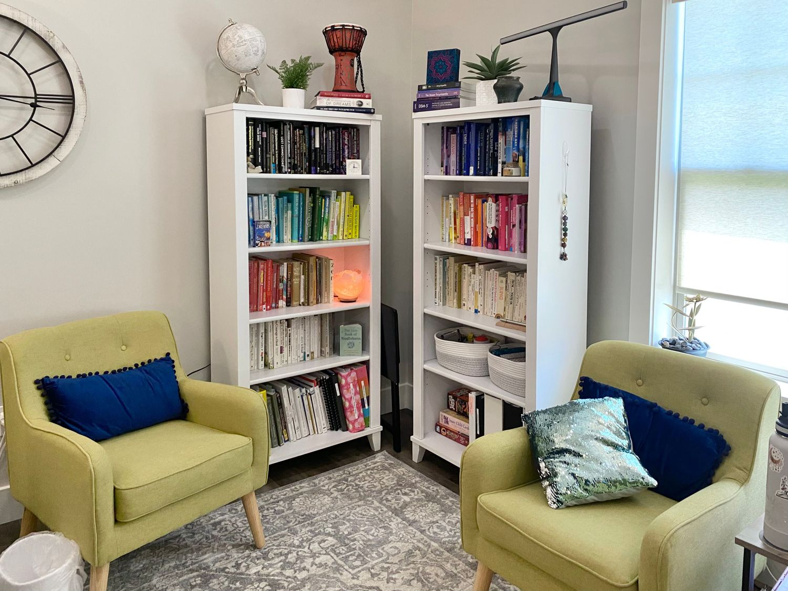

Aly Webster · Atlas Counseling · Ammon, Idaho
Growth comes from deepening self-awareness and healing through meaningful connection. This is a trusting, safe space where you can explore your internal patterns, process difficult experiences, and express yourself authentically.
About Aly
Aly is a Certified EMDR Therapist and Certified Ketamine-Assisted Psychotherapy provider. She integrates EMDR through a parts-informed lens and is trained in Internal Family Systems, drawing from attachment-based and relational approaches.
She works primarily with individuals navigating trauma, identity shifts, relationship wounds, and life transitions. Sessions are conversational in nature and provide space to deepen your emotional and personal narrative.
Finding a good fit between client and therapist is vital. Feel free to reach out to explore whether working together makes sense for you.
More about Aly
Aly's office · Ammon, Idaho
Areas of Focus
Approaches
EMDR · IFS-Informed Approach · Ketamine-Assisted Psychotherapy (KAP) · Cognitive Behavioral Therapy (CBT) · Relational Cultural Therapy · Strength-Based · Mindful Self-Compassion · Trauma-Focused
Getting Started
Aly sees clients in person in Ammon, Idaho and via telehealth. She accepts several major insurance plans and offers online payments.
Sessions are conversational, unhurried, and tailored to what you need. You can expect therapy with Aly to feel collaborative and tailored to what you need, rather than following a fixed agenda.
Location
1329 Ammon Park Dr · Ammon, ID 83406
In-person & telehealth available
Insurance Accepted
BlueCross BlueShield · Aetna · PacificSource · SelectHealth · Mountain Health Co-Op · University of Utah Health Plans
Payment
Online payments accepted · HSA eligible
Telehealth
Available · HIPAA-compliant video sessions